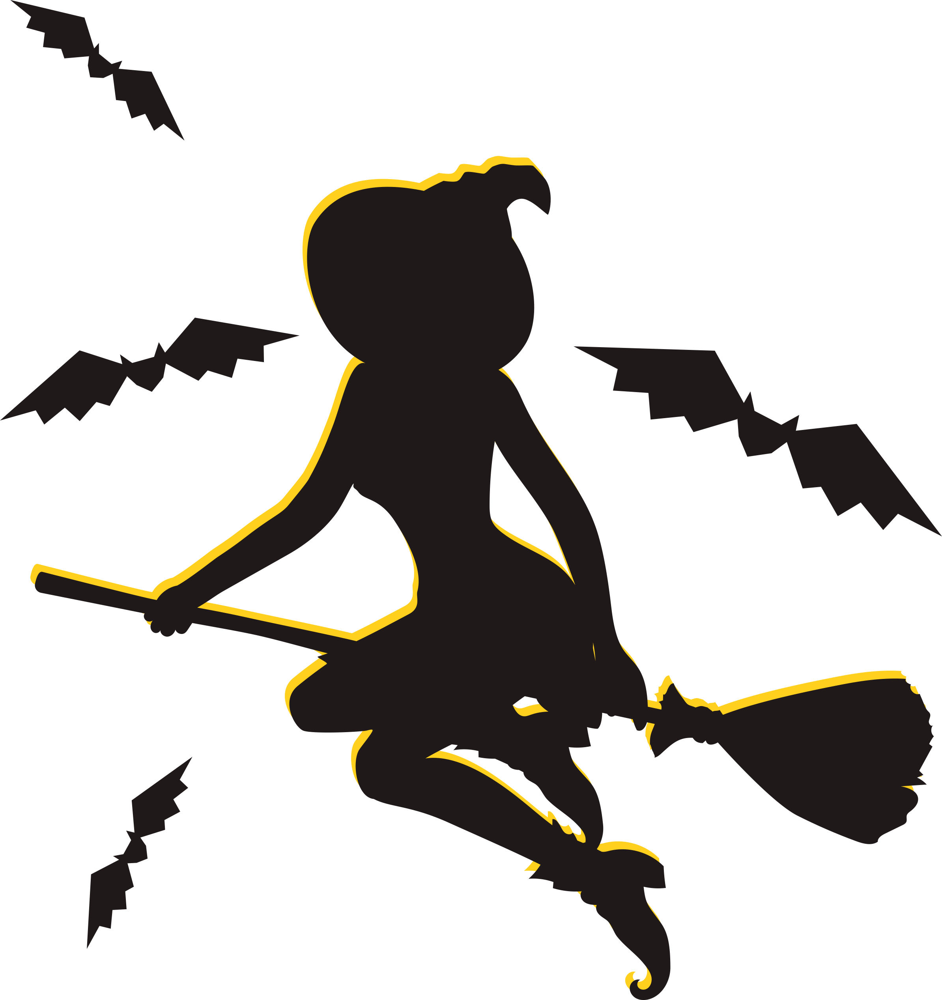

Personagens e cores do Halloween
As cores mais comuns do Halloween são preto, laranja e roxo. O preto é associado às trevas e é a cor mais usada pelas bruxas e magos. O laranja simboliza prosperidade, energia e força, e é a cor da abóbora, um dos principais símbolos do Halloween. O roxo simboliza mistério e a passagem da vida para a morte
Personagens Conhecidos como simbolos do Halloween
• Bruxas: são as principais simbologias dessa festa. As histórias contam que as bruxas participavam de festas realizadas pelo diabo, que normalmente eram realizadas em 30 de abril e 31 de outubro. Tal crença chegou aos Estados Unidos por seus colonizadores e a partir daí se espalhou por todo o mundo, tomando várias formas diferentes.
• Abóboras e velas: as abóboras simbolizam fertilidade e sabedoria, enquanto as velas servem para iluminar o caminho dos espíritos. Conta a lenda que a prática de cortar a abóbora e colocar uma vela acesa dentro dela surgiu da estória de Jack, homem que gostava muito de beber e que se encontrou com o diabo no dia em que bebeu em demasia. Esperto, aprisionou o diabo em vários locais até o dia em que, de tanto beber, morreu. Sua entrada no céu foi negada e no inferno também, já que humilhava o diabo em vida. A partir daí a alma de Jack passou a perambular pelo mundo. As abóboras iluminadas então passaram a ser utilizadas por Jack para fugir da escuridão e iluminar seu caminho.
• Gato Preto: é um símbolo ligado às bruxas, pois elas conseguem se transformar em gatos. Outras superstições acerca dos gatos são que esses são fontes de azar e que também são espíritos de pessoas mortas.
• Travessuras ou gostosuras: é uma brincadeira existente desde o século IX. Neste período as pessoas faziam os “bolos das almas” com massa simples e cobertura de groselha para entregar às crianças que, devidamente fantasiadas, batiam de porta em porta para pedir os bolos. Em troca de cada pedaço de bolo, a criança se comprometia a rezar pela alma de um parente de quem lhe ofereceu.
• Vassoura: é um símbolo do poder feminino em limpar tudo aquilo que traz consequências negativas para a vida, como eletricidade e pensamentos negativos.
• Morcego: simboliza a visão que ultrapassa as aparências e consegue ver o íntimo das pessoas.
• Máscaras e fantasias: as máscaras têm sido um meio de supersticiosamente afastar espíritos maus ou mudar a personalidade do usuário e também de comunicação com o mundo dos espíritos. Acreditava-se enganar e assustar os espíritos malignos, quando vestidos com máscaras. Também em outras culturas pessoas tem usado máscaras para assustar demônios que acreditavam trazer desastres como epidemias, secas, etc. Grupos envolvidos com magia negra e bruxaria também usam máscaras para "criar uma ligação" com o mundo dos espíritos.
• Caldeirão: É dentro dele que as coisas se transformam: o grão torna-se alimento, a raiz vira remédio, o desejo acontece, e o sonho vira realidade. Representa a essência da fertilidade.
• Fantasmas: um símbolo universal de espíritos e ocultismo. Durante as celebrações são feitos doces em forma de fantasmas que podem ser bonitinho, mas para as inúmeras vítimas da escravidão e opressão demoníaca, o mundo espiritual não é brincadeira.